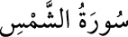

<a name=10693></a><br/>
<br/>
<b> </b><br/>
<b>91- eş-ŞEMS SÛRESİ</b><br/>
<i><b>Kadir sûresinden sonra Mekke’de inmiştir, 15 âyettir. Adını, sûrenin ilk kelimesi</b></i><br/>
<i><b>olan ve “güneş” anlamına gelen “şems”ten alır.</b></i><br/>
